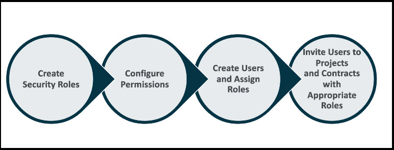

The User Management feature enables you to create and manage the Mind application's security roles, user accounts, and permissions.
A security role is a task-based privilege providing the same level of access to modules and application data for a specific group of user accounts. Permissions are configured on a role, and users are assigned to the role to control how these users view or edit business data in the application.Figure 1. User Management Process

The User Management module enables you to manage the following: